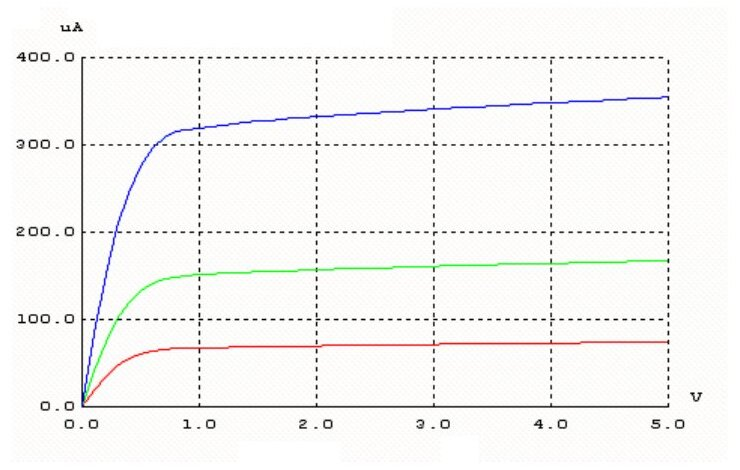

· EEM312
EEM312 Sayısal Elektronik: NMOS ve PMOS Karakteristikleri Deney Raporları (2005–2014)
EEM312 – Sayısal Elektronik · 28.04.2005 · 16.10.2026
Bu yazı, Başkent Üniversitesi EEM312 Sayısal Elektronik yazılım laboratuvarının NMOS ve PMOS elemanlarının karakteristikleri deneyi için yazılmış dört öğrencinin raporunu karşılaştırıyor. Deney 2005'te Y4, 2011 föylerinde Y3, 2014'te "Deney 7" adıyla yapılmış; içerik aynı. Raporlar: 28 Nisan 2005 tarihli bir rapor (A), 2011'den bir ön çalışma ve rapor (B), 2014 baharından bir rapor (C) ve 2014'ten bir ön çalışma ve rapor (D). Hepsi arkadaşların çalışmaları; kişisel bilgiler çıkarıldı. Föy ve model parametreleri EEM312 yazılım laboratuvarı föyleri Y1–Y3 yazısında. Kişisel bilgileri kapatılmış raporlar ve temizlenmiş SPICE ağ listeleri yazının sonundaki ZIP'te.
Ön çalışma: kavramlar (B ve D)
- Doyum akımı: V_DS artırıldıkça I_D önce artar; V_DS = V_GS − V_T noktasında kanal kısılır (pinch-off) ve bundan sonra akım ideal olarak V_DS'den bağımsızdır: I_D = (k'/2)(W/L)(V_GS − V_T)².
- Kanal boyu modülasyonu: V_DS doyum sınırının ötesine artırılınca etkin kanal boyu kısalır ve akım biraz artmaya devam eder: I_D = I_D'(1 + λV_DS). Kısa kanallı transistörlerde daha belirgindir.
- Hız doyumu: Elektrik alan kritik değere ulaşınca taşıyıcı hızı doyar (çarpışmalar). Kısa kanallı transistörlerde V_DS, V_GS − V_T'ye ulaşmadan hız doyumuna girilebilir.
- Sıcak taşıyıcı etkisi: Boyutlar küçülürken besleme gerilimleri aynı oranda küçülmediği için alan büyür; hızlanan elektronlar kapı oksidine saplanır, NMOS'ta V_T zamanla artar (PMOS'ta azalır), elemanın ömrü kısalır.
- Metal göçü: Yüksek akım yoğunluğunda elektron akışı metal atomlarını sürükler; temaslarda alüminyumun silisyuma difüzyonu eklemleri kısa devre edebilir, ince hatlar kopabilir.
- CMOS mandallama (latch-up): n-p-n-p katmanları iki bipolar transistörden oluşan, birbirini pozitif geri beslemeyle süren tristör benzeri bir yapı kurar; tetiklenince besleme kısa devre olur. Önlem: koruma halkaları ve kaynaklara yakın bol sayıda gövde/kuyu bağlantısı ile parazitik dirençleri küçültmek.
Not: B'nin ön çalışmasında elektron ve boşlukların doyum hızı "yaklaşık 10⁻⁵ m/s" yazılmış; doğrusu yaklaşık 10⁵ m/s (10⁷ cm/s).
Soru 1: Level 3 modelle karakteristik eğriler
Tüm raporlar W = 1.8 µm, L = 1.2 µm transistör ve Level 3 modelle aynı altı eğriyi çizdirmiş. Akım, drain'e seri bağlanan 0 V'luk bir "ölçüm kaynağı" (Vsamp) üzerinden okunuyor; W taraması alter komutuyla yapılıyor (D raporundan):
M1 2 1 4 3 NMOS W=1.8u L=1.2u NRS=0.333 NRD=0.333
VIN 1 0
VDD 2 0 5
VBS 3 0 0
Vsamp 4 0 0
.control
Alter M1 W=1.8u
dc Vdd 0 5 0.1
let c1=vsamp#branch
Alter M1 W=3.6u
dc Vdd 0 5 0.1
let c2=vsamp#branch
Alter M1 W=7.2u
dc Vdd 0 5 0.1
let c3=vsamp#branch
plot c1 vs v(2) c2 vs v(2) c3 vs v(2)
.endc| Eğri | Gözlenen etki (raporların ortak yorumu) |
|---|---|
| NMOS I_D–V_DS, V_BS = 0, V_GS = 0–5 V | Doyumda akım sabit kalmıyor, eğimle artıyor: kanal boyu modülasyonu |
| NMOS I_D–V_GS, V_SB = 0–5 V, V_DS = 5 V | V_SB arttıkça eğriler sağa kayıyor, V_T artıyor: gövde etkisi |
| NMOS I_D–V_DS, V_GS = 2 V, W = 1.8/3.6/7.2 µm | W arttıkça akım artıyor (W/L ile orantılı) |
| PMOS I_D–V_DS, V_SG = 0–5 V | Akım ve gerilim negatif; yine kanal boyu modülasyonu |
| PMOS I_D–V_GS, V_SB = 0–5 V | Gövde etkisi (V_T mutlak değerce artıyor, eğriler kayıyor) |
| PMOS I_D–V_DS, V_SG = 2 V, W taraması | W arttıkça akımın mutlak değeri artıyor |

Gövde etkisi için raporlarda verilen eşik gerilimi bağıntısı: V_T = V_T0 + γ(√(|2φ_F| + V_SB) − √|2φ_F|). A raporu W'yi iki katına çıkarınca akımın da yaklaşık iki katına çıktığını, buna karşılık sığaların da büyüdüğünü ekliyor.
Not: B raporunda W/L büyüdükçe "direncin arttığı ve V = I·R'den akımın arttığı" yazılmış; doğrusu W/L büyüdükçe kanal direnci azalır ve akım artar. Aynı raporun PMOS kısmındaki "W arttıkça W/L küçülür, akım azalır" ifadesi de yanlış; PMOS'ta da W arttıkça |I_D| artar (raporun kendi grafikleri de bunu gösteriyor).
Soru 2: Uzun ve kısa kanal, hız doyumu
BSIM modelleriyle iki NMOS karşılaştırılmış: L = 1 µm, W = 90 µm (BSIM3, uzun kanal) ve L = 0.18 µm, W = 5 µm (BSIM4, kısa kanal); V_GS = 0.2–2 V, V_DS = 0–2 V.
Raporların ortak sonucu: kısa kanallı transistörde aynı V_DS'te kanal boyunca elektrik alan çok daha güçlü olduğundan taşıyıcılar hız doyumuna erken girer; akım V_GS − V_T'ye ulaşılmadan doyar, doyum akımı V_GS ile karesel değil yaklaşık doğrusal artar ve I_D–V_DS eğrileri uzun kanala göre daha "yumuşak" görünür. W'lerin farklı seçilmesinin nedeni, iki transistörün akımlarını karşılaştırılabilir düzeyde tutup yalnız kanal boyunun etkisini görmektir.
Not: A raporu kısa kanaldaki erken doyumu kanal boyu modülasyonuyla birlikte anlatıyor; eğrilerdeki erken ve düşük doyum asıl olarak hız doyumundan, doyum bölgesindeki eğim ise kanal boyu modülasyonundan kaynaklanır.
Klasörde aynı deneyin birkaç başka öğrenciye ait ağ listesi kopyaları (yalnız açıklama satırları farklı) da vardı; ZIP'e B raporunun (A_soru…) ve D raporunun (C_nmos…, C_pmos…) ağ listeleri, ad ve numara içeren açıklama satırları çıkarılarak kondu.